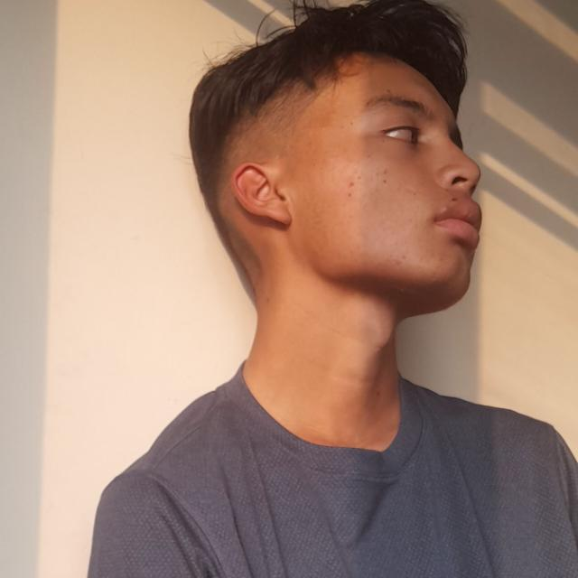

Yerick Julian Poveda Rodriguez
Apasionado por la agricultura y la tecnología. En busca de crear soluciones innovadoras para la comunidad agrícola.
Apasionado por la agricultura y la tecnología. En busca de crear soluciones innovadoras para la comunidad agrícola.